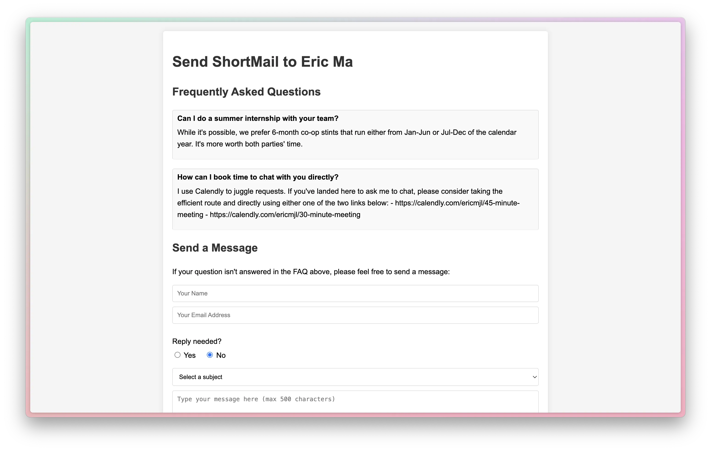

Eric J Ma's Website
written by Eric J. Ma on 2024-09-23 | tags: coding email htmx sqlite fastapi cloudmailin digital ocean deployment web development ai coding
In this blog post, I share my experience recreating Dan Ariely's Shortwhale using a tech stack that includes HTMX, SQLite, FastAPI, CloudMailin, and DigitalOcean. I highlight the transformative role of AI-assisted coding with Cursor, which allowed me to build core functionality in under two hours. The project, now live, was an experiment and a learning opportunity, emphasizing the speed and ease of AI-assisted web development. Curious about how AI can accelerate your web projects?
This past weekend, I had the chance to hack on a small project inspired by Dan Ariely’s Shortwhale, an email service that provides a contact form where users can add FAQs, and others can send emails using that form. I was able to recreate the whole thing, and it turned out to be a fun exercise with some surprising insights.
The tech stack
For the build, I used a combination of tools that made this project come together quickly:
- HTMX for the frontend, which is great for minimizing the use of heavy JavaScript frameworks.
- SQLite as the database.
- FastAPI for the backend.
- CloudMailin to handle email routing.
- DigitalOcean, where I’m running a $12/month server to host everything.
The most magical piece in the whole process, though, was using AI-assisted coding with Cursor. With the help of an AI assistant, I was able to get the core functionality up and running in less than two hours. That was pretty mind-blowing, especially since I don’t consider myself a web development expert.
I was clearly inspired by @levelsio's simple setup, including his famed use of a SQLite database for his services.
The build process
The core functionality came together quickly, but the rest of the project involved refining the UI, making sure email routing was working, debugging the deployment on my Dokku machine, and setting up GitHub CI/CD for automatic deploys. Despite these tasks, the overall process was remarkably smooth.
The project is now live at on my personal website, and everything is fully functional. Thanks to GitHub CI/CD, as soon as I've tested a change locally, I can quickly push it to deployment without issue.

Reflections
I’m still undecided about whether I’ll release this as a full service for others to use. If I do, it would be to cover hosting costs rather than to make significant money. This was more of an experiment and a learning opportunity than anything else. That said, if you're interested, drop me a note via Shortmail to let me know!
What really struck me throughout this project was how fast AI-assisted coding can be. As someone who’s proficient in Python but not as comfortable with web development, using AI to assist with building this project was an eye-opening experience. It allowed me to bypass a lot of the usual headaches that come with web projects, while still giving me a low grade onramp to making web apps with Python and HTMX. I also got more used to coding with Cursor, iteratively shaping how I frame and scope requests (as well as when I reset the Composer) to balance Claude's accuracy in changes.
Also, HTMX was a joy to use! By minimizing the need for JavaScript frameworks, I could focus on getting things done without getting bogged down in complex tooling.
Final thoughts
Overall, this was a rewarding exercise in AI-assisted coding. It has definitely shifted my perspective on the speed and ease with which we can build fully functional web apps today, especially with the right tools.
Cite this blog post:
@article{
ericmjl-2024-recreating-coding,
author = {Eric J. Ma},
title = {Recreating Shortwhale with AI-Assisted Coding},
year = {2024},
month = {09},
day = {23},
howpublished = {\url{https://ericmjl.github.io}},
journal = {Eric J. Ma's Blog},
url = {https://ericmjl.github.io/blog/2024/9/23/recreating-shortwhale-with-ai-assisted-coding},
}
I send out a newsletter with tips and tools for data scientists. Come check it out at Substack.
If you would like to sponsor the coffee that goes into making my posts, please consider GitHub Sponsors!
Finally, I do free 30-minute GenAI strategy calls for teams that are looking to leverage GenAI for maximum impact. Consider booking a call on Calendly if you're interested!